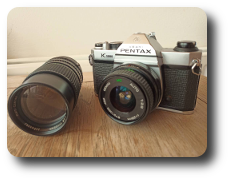

|
During my teenage years in the early eighties I owned a Kodak Ektra 100 point-and-shoot pocket film camera, which I used for snapshots of family and friends, usually while on holiday. But I didn't study photographic theory or join a photography club to develop any technique - I was just an occasional point & shooter. In the late eighties I had very little interest in photography as my thinking at the time was that life is to be lived and not photographed. But when friends of mine in the local hiking club showed photos of hikes that I had been on, and attending slide show presentatons by intrepid adventurers at the UCT Mountain & Ski club, I started appreciating the memories that photographs capture... |
|
So, in the early nineties I decided to fork out over R1000 for a brand new Minolta Weathermatic film camera. In bright yellow, this handy device was waterproof and shockproof, perfect for hikes and other outdoor activities. But as a student I had very little money to develop film and prints. This forced me to think very carefully about every single photograph I made: angle... composition... framing... is this scene worth shooting? Do I really even want this particular shot? This kind of discipline and scrutiny is often lacking in modern digital photography. |
I was able to carry my little yellow device with me on hikes in any weather conditions. Being waterproof up to 5 metres allowed me to use it when snorkelling in lake Malawi and along the South African coast.
In 1998 the house we shared in Cape Town was burgled and a whole bunch of stuff was stolen, including my camera. Somehow the loss of my camera felt more personal than the other stuff - probably because it had accompanied me on so many trips. I started browsing Junk Mail and Cape Ads print adverts, as well as local pawn shops. Within days I spotted my camera at a Cash Converters (local pawn shop franchise). So, I went in and claimed my camera, for which I no longer had any original receipts, but I was able to prove ownership by showing them where I had glued the on/off switch back on after it had broken off a few years previously.
|
Reunted with my camera I was able to continue photographing my holidays and special occasions throught the nineties, usually usig slide film. In the early "noughties" we moved to Ireland, and in 2002 I started taking a stronger interest in photography, wanting to learn the fundamentals. So, I opened an eBay account and started searching for secondhand Pentax K1000 cameras - the type often used by students to learn basic techniques of photography with a manual camera. |
|  |
I ended up with a body and two lenses: 28mm for landscapes and 135mm for portraits, both with apertures opening up to f/2.8. Being fully manual, the Pentax K1000 required only a small battery for the built-in light meter, which you could do without if necesary or preferred by using a separate hand-held light meter. I used my Pentax to experiment with varying apertures and shutter speeds, using various film speeds, types and brands. But, being on a fairly tight budget I still found it expensive to buy and develop film and make prints... |
In 2004 I decided to try digital photography and bought my wife a small Canon Powershot S1 camera to capture the first few years of our new born son's life. I wasn't taking photography seriously though - the new camera was just for taking snapshots of our young family.
It was only in 2008 that I could to afford to venture into photography with more intent. I decided to leave film photography behind for good, but I didn't want to jump onto the DSLR bandwagon. It didn't make sense for me to use 1970's SLR technology with digital cameras. Sure, it made sense for those SLR film photographers who had previously invested heavily in lenses that they could continue using on their new DSLR cameras, thereby protecting their investments. But for someone starting again from scratch there really is no need for mirrors and prisms in this day and age.
|
So, I decided to try out a "bridge" camera - a digital camera with an integrated zoom lens and a sensor larger than that of a compact camera and smaller than a DSLR, all with full manual control along with automatic features, ie. somewhere between amateur consumer compact cameras and professional DSLR cameras. I chose the Fujifilm S100FS camera, with 14.3x manual zoom lens and a 2/3 inch sensor. I liked the camera and used it quite extensively to photograph my young son, our holidays together, as well as a bit of Tango dance photography. But in 2009 I was burgled, losing my Fujifilm camera and Apple MacBook... |
|
It was only the following year, in 2010, that I decided to replace my stolen camera with a fairly similar bridge camera: the new Fujifilm HS10, with a more powerful 30x zoom lens. Even though I enjoyed experimenting with manual controls, varying shutter speeds for long exposures and trying different apertures, I wasn't satisfied with the limits of bridge cameras: the inability to change lenses as well as the small images sensors... |
In the DSLR world the two main players were Canon and Nikon, each with their own propietary lens mount systems, which meant that you could not use lenses from one manufacturer on bodies from the other. You had to use lenses from the same manufacturer as the body, or from third-party manufacturers. This essentially creates a lock-in market where you need to consider very carefully which system you will choose before spending lots of money on gear.
What I liked about Pentax in the seventies is that they "opened up" their K-mount system so that many third-party manufacturers could produce bodies and lenses that are compatible with thir system, providing more choice and competition and thereby resulting in lower prices.
Olympus and Panasonic cooperated along simiar lines and came up with the Micro Four-Thirds system, which specifies a sensor size and lens mount system such that their caera bodies and lenses can work with each other. This also made it more attractive for third party lens as well as camera body manufacturers to make products for the Micro Four-Thirds system, resulting in far greater consumer choices while reducing lock-in.